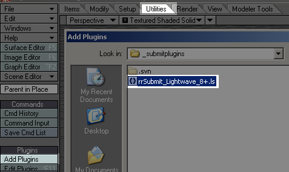
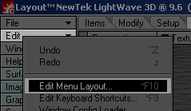
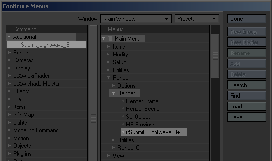

By default Lightwave is configured to use a Shared Executable.
To setup Lightwave, please follow these steps:
[RR]\render_apps\renderer_exe\lightwave\win_xXX\Lightwave_9.6\
Remove all files you do not need to keep the file count lower (e.g. folders docs, include, ntcodec,sdk).
C:\RR_localdata\renderer_exe\lightwave\win_xXX\Lightwave_9.6
Use the "Clear" button. Then "Scan Directory" and scan the *local* plugin directory C:\RR_localdata\renderer_exe\lightwave\win_xXX\Lightwave_9.6\plugins
Close Lightwave.
C:\Documents and Settings\[YourUser]\LW9.CFG or LW9-64.CFG
C:\Documents and Settings\[YourUser]\LWEXT9.CFG or LWEXT9-64.CFG
(dependend if you have started 32bit or 64bit Lightwave)
to [RR]\render_apps\renderer_prefs\lightwave\win_x32\9.6\
Now you have all Lightwave executables, plugins and config files in the RR share.
Note: You have to do these steps twice if you are using x32 and x64 Lightwave.
Start Lightwave. Select the utilities tab. Click on "Add plugins" on the left menu. Browse for [RR]\render_apps\_submitplugins\rrSubmit_Lightwave_8+.ls and add this plugin. |
 |
If you have never started the rrWorkstationInstaller, please start it and install the submission plugins. This will register the RR_ROOT environment variable. Please restart the machine if requested. |
|
Choose Edit/Edit Menu Layout from the side bar. |
 |
Open the Additional group on the left. And Main Menu/ Render on the right side. Drag'n'Drop the rrSubmit into the Render menu. |
 |
You can now start the submitter from within Lightwave. It will start the rrSubmitter with your scene file and your Lightwave version as commandline parameter. |
Submit:
To Submit, please use the Lightwave plugin.
Note: You can also start the rrSubmitter manually and load (multiple) scene files, but that will not set the content folder.
Content Folder:
If you use a content folder for your Lightwave scene, then this content folder has to be set in the "Database" path in rrSubmitter.
If you want to use one Content Folder for *ALL* jobs, then you can edit the lightwave render config file.
Open the file [RR]\render_apps\_config\3D04__Lightwave.cfg in an editor.
Change the line
CommandLine_Win= set "LW_CONTENT_DIR=<D><EL\>"
into
CommandLine_Win= set "LW_CONTENT_DIR=\\filerserver\share\myContentFolder<EL\>"